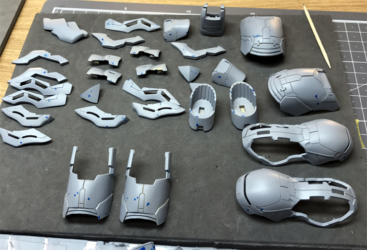
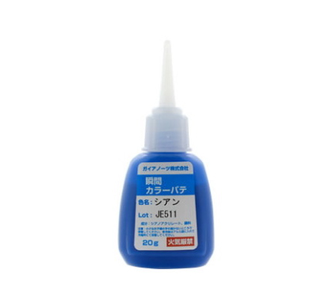
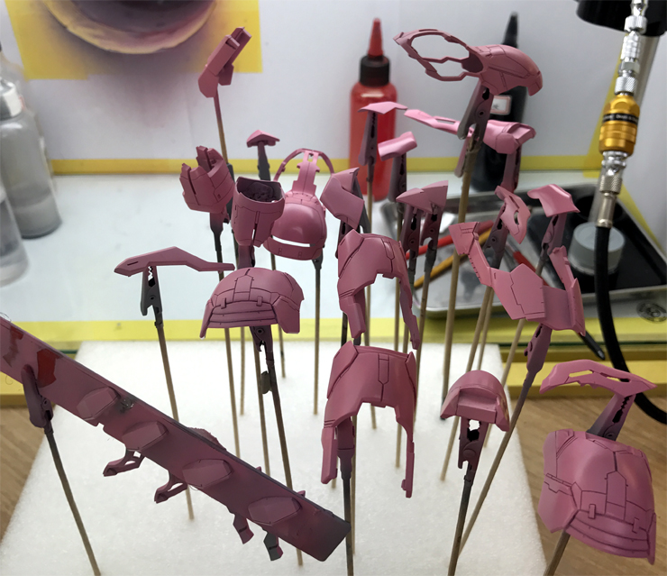
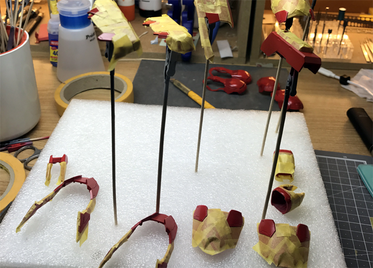

아무래도 레진이다보니 캐스팅 과정에서 흠집들이 생길 수 밖에 없습니다...
아무리 사포질을 해도 서페이서를 뿌리면 흠집들이 보이게 마련인데요...
가이아노츠의 순접퍼티로 메꾸고 갈아주었습니다.

요게 순접 퍼티인데요, 경화제 반응도 좋고 점도도 적당한데다, 가공성도 괜찮아서 애용합니다.
폴리퍼티는 냄새와 희석의 귀찮음이 있고, 일반 퍼티는 건조시간을 기다리기 힘들어서 손이 안가더라구요.

붉은색의 사자비를 위해 피니셔스의 핑크 파운데이션을 서페이서 위에 바로 올려주었습니다.
피니셔스의 파운데이션 시리즈는 차폐력이 높고 입자가 고와서 밑색 전용으로 많이 쓰는 편인데요, 사자비 빨강의 발색을 올려주기 위해 핑크 파운데이션을 사용했습니다.

기본 빨강을 올리고 마스킹 후 약간 짙은 빨강을 올렸습니다.
기본 빨강은 군제의 슈퍼 이탈리안 레드를, 짙은 빨강은 이탈리안 레드에 군제 와인레드를 1:1로 섞어 조색했습니다.
전반적으로 투톤걸러를 생각했는데요, 톤 차이를 둘 댸에는 다른 색상보다는 기본색과의 조색이 좀 더 자연스럽다고 생각합니다.